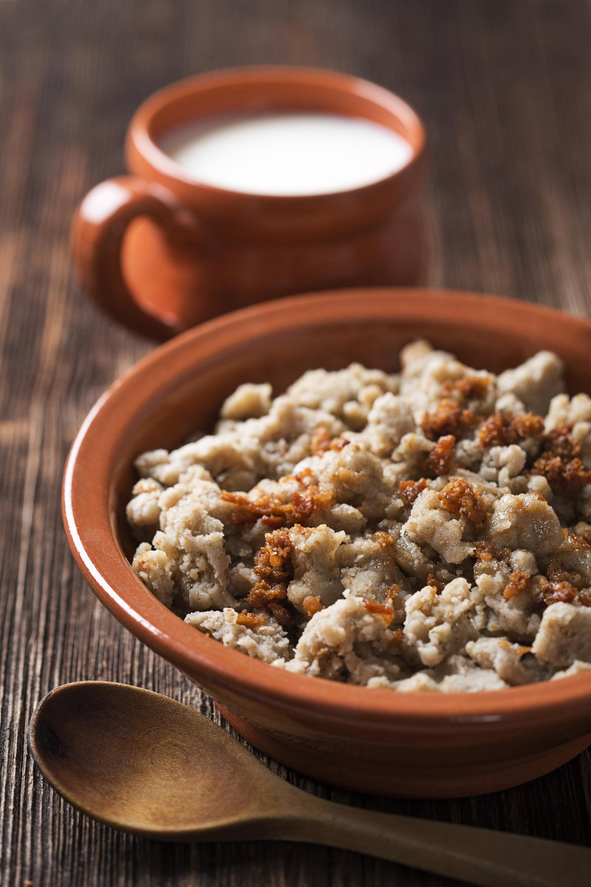

Potica
Home

Description
Zganci are simple traditional Slovenian dish. Usually they are served with cracklings, yoghurt, sour milk, white coffee or sauerkraut.
Ingredients
- 300 g buckwheat flout
- 1/2 tsp salt
Steps
- Bring one liter of salted water to boiling.
- Pour in the flour and do not stir. Take a wooden spoon and make a hole in the middle of flour lump with its handle./li>
- Cover the pan, lower the heat and leave to simmer for 20 minutes.
- Take the pan from the stove and leave it to cool a bit. Pour out the water but keep it for later.
- Stir the steamed flour and add a little bit of the water from the previous step. Zganci should form solid 1-3 cm big lumps, thay should not be too sticky and also there should not be any dry flour.